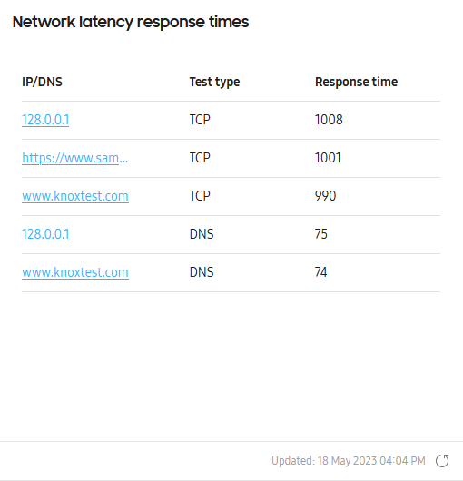
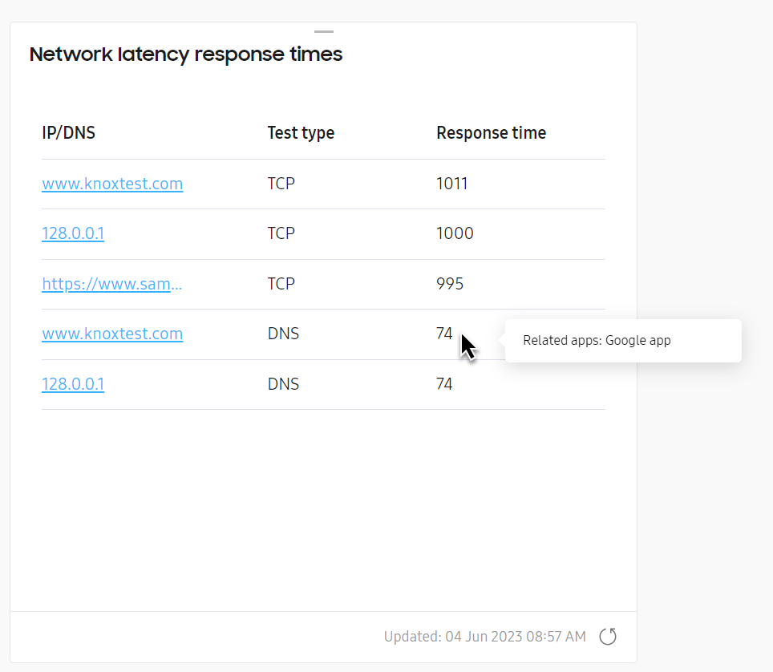
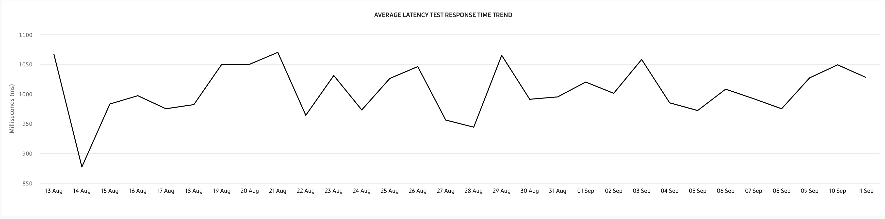
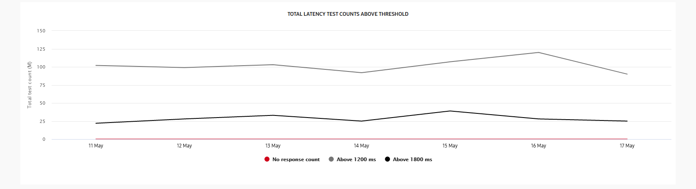

Network latency
Last updated August 23rd, 2023
The Network latency response times tile lets you see which IP addresses or domains have the longest response time or don’t respond at all to device requests. This data can help you troubleshoot possible issues related to the application server, for various device groups across the organization.
Main tile view

The main tile view provides a table of the top 5 IP addresses or website names that take the longest to respond to device requests.
In the IP/DNS column, you can click the IP address or DNS to get a drill-down view of the latency data. In the Test type and Response time columns, you’ll see the type of request made and the total response time in milliseconds respectively.
If you defined a Related app in the Settings > NETWORK tab, you can also see which apps had the longest response times when you hover your cursor over a value in the Response time column.

Drill down view
Clicking any IP address or domain name takes you to the Network latency drill-down view. This view provides two charts to help you analyze network latency trends.
Above the charts, you’ll see a ribbon displaying key network latency information:
- Response count — how many times your devices reached the IP address or DNS over the selected reporting period.
- Average response — the average time it took to get a response from the IP address or DNS over the selected reporting period.
- Median response time — the mid-value of all response times over the reporting period.
- Maximum response time — the longest time it took to get a response from an IP address or DNS over the selected reporting period.
- Minimum response time — the shortest time it took to get a response from an IP address or DNS over the selected reporting period.
- No response count — the total number of times that an IP or DNS did not respond to a device query over the selected reporting period.
Average latency trend

The AVERAGE LATENCY TEST RESPONSE TIME TREND chart lets you see the average time it takes (in milliseconds) to respond to the particular address over the requested data period. Hover your cursor over the graph to view detailed information like the total test count, and average/median/max latency times for each day.
Total latency trend

The TOTAL LATENCY TEST COUNTS ABOVE THRESHOLD chart lets you see the total number of times a query took too long to respond — or didn’t respond at all — based on the pre-defined latency response time thresholds.
Depending on the type of latency test you’re conducting (PING, DNS, or TCP), the following values define the lower and upper thresholds for the chart:
Lower threshold
- PING: 20 ms
- DNS: 80 ms
- TCP: 1200 ms
Upper threshold
- PING: 40 ms
- DNS: 130 ms
- TCP: 1800 ms
Hover your cursor over a graph to view the total number of delayed-response or no-response issues per day. Towards the bottom of the chart, you’ll find a legend that color-codes the different trend graphs for No response, Lower threshold, and Upper threshold respectively. Click any item in the legend to show or hide the graph on the chart.
This document was updated for the Knox cloud services 23.09 UAT.
The Network latency response times tile lets you see which IP addresses or domains have the longest response time or don’t respond at all to device requests. This data can help you troubleshoot possible issues related to the application server, for various device groups across the organization.
Main tile view
The main tile view provides a table of the top 5 IP addresses or website names that take the longest to respond to device requests.
In the IP/DNS column, you can click the IP address or DNS to get a drill-down view of the latency data. In the Test type and Response time columns, you’ll see the type of request made and the total response time in milliseconds respectively.
If you defined a Related app in the Settings > NETWORK tab, you can also see which apps had the longest response times when you hover your cursor over a value in the Response time column.
Drill down view
Clicking any IP address or domain name takes you to the Network latency drill-down view. This view provides two charts to help you analyze network latency trends.
Above the charts, you’ll see a ribbon displaying key network latency information:
- Response count — how many times your devices reached the IP address or DNS over the selected reporting period.
- Average response — the average time it took to get a response from the IP address or DNS over the selected reporting period.
- Median response time — the mid-value of all response times over the reporting period.
- Maximum response time — the longest time it took to get a response from an IP address or DNS over the selected reporting period.
- Minimum response time — the shortest time it took to get a response from an IP address or DNS over the selected reporting period.
- No response count — the total number of times that an IP or DNS did not respond to a device query over the selected reporting period.
Average latency trend
The AVERAGE LATENCY TEST RESPONSE TIME TREND chart lets you see the average time it takes (in milliseconds) to respond to the particular address over the requested data period. Hover your cursor over the graph to view detailed information like the total test count, and average/median/max latency times for each day.
Total latency trend
The TOTAL LATENCY TEST COUNTS ABOVE THRESHOLD chart lets you see the total number of times a query took too long to respond — or didn’t respond at all — based on the pre-defined latency response time thresholds.
Depending on the type of latency test you’re conducting (PING, DNS, or TCP), the following values define the lower and upper thresholds for the chart:
Lower threshold
- PING: 20 ms
- DNS: 80 ms
- TCP: 1200 ms
Upper threshold
- PING: 40 ms
- DNS: 130 ms
- TCP: 1800 ms
Hover your cursor over a graph to view the total number of delayed-response or no-response issues per day.
Towards the bottom of the chart, you’ll find a legend that color-codes the different trend graphs for No response, Lower threshold, and Upper threshold respectively. Click any item in the legend to show or hide the graph on the chart.
In the RESPONSE TIME PER GROUP data table below, you’ll see a summary of your device groups’ network latency data. In the ACTIONS drop-down, you can download a CSV file of the network latency data for groups in your fleet, or for devices in a specific group.
- To download the CSV data for groups in the fleet, select one or more groups from the list, then click ACTIONS > Download as CSV. You can also perform this action without selecting a group. If no group is selected, the CSV file will contain data for all groups.
- To download the CSV data for devices in a specific group, select one or more groups from the list, the click ACTIONS > Download device list as CSV.
Is this page helpful?
Thank you for your feedback!